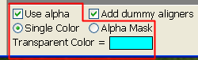
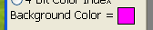

Using Alpha
The Nintendo 64 Texture Converter supports the automatic import of
image formats with transparency, such as PNG and ICO. For non
transparent images, you can choose to designate a single color as transparent,
or you can import an alpha mask instead (If you don't know what an alpha mask
is, it will be explained shortly).
The two different alpha modes can be selected on the left side of the bottom
menu. By default, the use of alpha is enabled, and set to use the alpha mask.

The two different alpha modes can be selected on the left side of the bottom
menu. By default, the use of alpha is enabled, and set to use the alpha mask.
This can be changed by pressing their respective buttons. If
Single Color mode is enabled, then an extra section will appear,
showcasing which color is currently being used for transparency. This color
can be changed by simply hovering the mouse to the respective pixel on your
image, and left clicking.
Alpha Masks
An alpha mask is simply a black and white image which describes how transparent
each pixel is, with white being opaque and black being fully transparent
(different shades of gray represent different amounts of transparency). Many
image editors allow you to preview the alpha mask of an image, and export them
as well.
An example of a 32x32 image (left), its alpha mask (center), and the result
of their combination (right).
If you import an image with transparency baked in (such as a PNG), its alpha
mask will be imported as well, which you can preview by pressing the
 Toggle Alpha View button. If you wish
to import an alpha mask separately, that can be done by pressing the
Toggle Alpha View button. If you wish
to import an alpha mask separately, that can be done by pressing the
 Import Alpha Mask button. If you modify
the alpha in some way, such as toggling the Use Alpha checkbox, or by
changing the color of single color transparency, the alpha mask should be
automatically updated and previewable in realtime.
Import Alpha Mask button. If you modify
the alpha in some way, such as toggling the Use Alpha checkbox, or by
changing the color of single color transparency, the alpha mask should be
automatically updated and previewable in realtime.
The Nintendo 64 Texture Converter supports the import of colored images
for alpha masks, as these will simply be converted to grayscale.
Alpha Background Color
Transparent images need some filler color value. By default, the Nintendo 64
Texture Converter uses magenta as the filler color, but this value can be
changed by simply clicking the colored box below the export types on the left
side of the program, and choosing a different background color with the color
picker.

If you want more control over the background, then you must import a fully
opaque image and use the alpha mask import instead.
Note On 1-Bit and 4-Bit Alpha
If your alpha mask contains shades of gray, these values might get rounded up
or down depending on the color mode. On color modes with only 1 bit of alpha,
this tool will round up values of alpha with luminance of 128 or higher, and
round down values below 128. In color modes with 4 bits of alpha, the alpha
value will be rounded to the nearest multiple of 16. For more information on
which color formats support how many bits of alpha, consult the
Image Formats page of this manual.